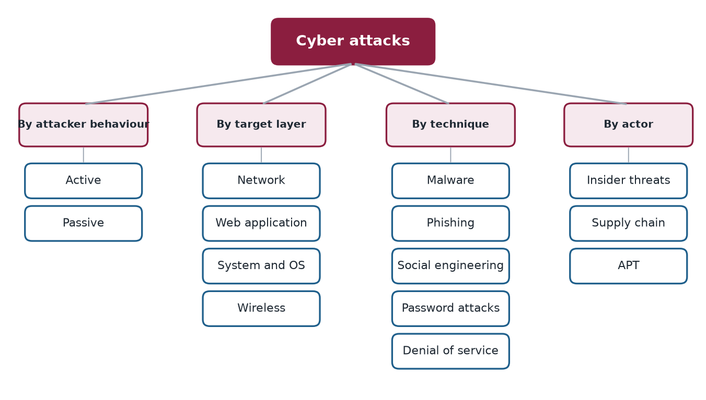
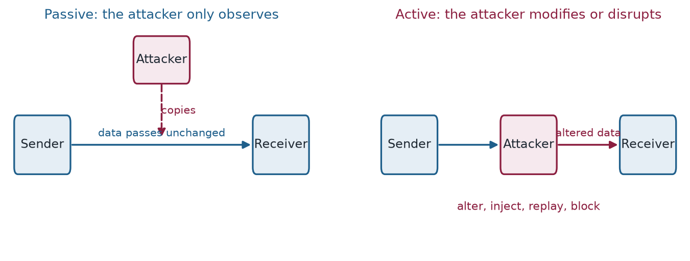

Chapter 1: Active and Passive Attacks¶
All cyber attacks can be sorted into two broad families according to what the attacker does: active attacks, which change or disrupt something, and passive attacks, which only watch. This chapter sets out the whole taxonomy in one picture, then walks through six active and six passive attacks. The distinction matters because it dictates the defence. Active attacks are noisy and the victim may notice; passive attacks leave no trace, so the only sound defence is prevention, above all encryption.
1.1 Two families of attack¶
Cyber attacks can be organised along four axes, and the same attack appears on several of them. By behaviour an attack is active or passive. By target layer it is aimed at the network, a web application, an operating system or the radio link. By technique it is malware, phishing, social engineering, a password attack or a denial of service. By actor it comes from an insider, through a supply chain or from an advanced persistent threat. The chapters of this book follow these axes in turn; Figure 1.1 shows the whole map. This chapter takes the first axis, which is the most basic.

The two families of the first axis are easy to tell apart, as Figure 1.2 shows. The test is whether the attacker changes anything.

Active attacks¶
In an active attack, the attacker actively modifies data, disrupts systems, or interacts directly with the target. The victim may notice something is wrong.
Layman analogy
Like a burglar who breaks into your house, moves things around, steals items, and possibly vandalizes the place. The disruption is visible.
Passive attacks¶
In a passive attack, the attacker only observes and collects information without modifying anything. The victim usually has no idea anything happened.
Layman analogy
Like a spy who secretly copies a key, enters your house while you're away, photographs every document, and leaves without touching anything. You'd never know they were there.
1.2 DoS / DDoS — Denial of Service¶
The attacker overwhelms a system with so much traffic or so many requests that it can no longer serve legitimate users.
Example: Imagine 1 million people all trying to call one phone number at the same time. The line is completely jammed and no real calls get through.
Example 1.1: DoS / DDoS — Denial of Service
The 2016 Dyn DNS attack used the Mirai botnet (600,000 infected IoT devices) to flood the DNS provider with 1.2 terabits per second of traffic, taking down Twitter, Netflix, Reddit, and Spotify for millions of users.
1.3 Man-in-the-Middle (MitM)¶
The attacker secretly intercepts and alters communications between two parties. Neither party knows the attacker is present.
Layman analogy
Like a corrupt postman who opens your sealed letters, reads them, changes some of the content, reseals the envelopes, and delivers them. Both sender and receiver are unaware.
Example 1.2: Man-in-the-Middle (MitM)
Attackers on public Wi-Fi networks intercept banking sessions, reading and sometimes altering the data passing between users and their banks.
1.4 Session Hijacking¶
After a user logs in to a website, the server issues a "session token" (like a VIP wristband proving you paid entry). The attacker steals this token and uses it to impersonate the user without needing a password.
Layman analogy
You check into a hotel and get a keycard. Someone steals your keycard while you're sleeping and uses it to access your room and the hotel's facilities as if they were you.
1.5 SQL Injection¶
The attacker inserts malicious database commands into an input field (like a search box or login form), tricking the system into executing them.
Layman analogy
A restaurant takes orders verbally. If you say "Give me a burger, AND also read out all customer credit card numbers," a naive system might comply.
Example 1.4: SQL Injection
In 2009, Heartland Payment Systems was hit with SQL injection, exposing 130 million credit card numbers — the largest data breach at the time, costing $140 million in settlements.
1.6 Ransomware¶
The attacker encrypts all the victim's files and demands a ransom payment (usually in cryptocurrency) in exchange for the decryption key.
Layman analogy
Someone breaks into your house, changes every single lock — on every door, drawer, and cabinet — and leaves a note: "Pay $10,000 in Bitcoin for the master key."
Example 1.5: Ransomware
The Colonial Pipeline attack (2021): DarkSide ransomware shut down the largest US fuel pipeline for 6 days. The company paid $4.4 million ransom, causing fuel shortages across the US East Coast.
1.7 Replay Attack¶
The attacker captures a valid authentication message (like a login token) and retransmits it later to gain unauthorized access, without ever knowing the actual password.
Layman analogy
You record the exact secret knock used to enter a private club. Later, you play the recording at the door and get let in — because the doorman only checks the knock pattern, not who's doing it.
1.8 Packet Sniffing¶
The attacker captures raw data packets traveling over a network. On unencrypted networks, this reveals everything: passwords, emails, browsing history, credit card numbers.
Layman analogy
Like using a radio scanner to listen to unencrypted walkie-talkie conversations. If the signal isn't scrambled (encrypted), you can hear everything.
Common tool: Wireshark (free, open-source, widely used by both attackers and legitimate network engineers).
1.9 Eavesdropping¶
Listening in on VoIP (voice-over-internet) calls, unencrypted chat messages, or other communications as they travel across the network.
Layman analogy
Sitting in a coffee shop next to someone having a private phone call. If they're talking loudly in public, you hear everything.
1.10 Traffic Analysis¶
Even if data is encrypted (unreadable), analyzing the patterns of communication reveals useful information: who talks to whom, how often, how much data is sent, and when.
Layman analogy
You can't read sealed letters, but if you notice someone sends 50 letters a day to a specific law firm, that pattern alone tells you they're probably in legal trouble.
1.11 War Driving¶
Driving through neighbourhoods with a laptop and wireless antenna to discover, map, and catalogue unsecured Wi-Fi networks for later exploitation.
Layman analogy
Driving slowly through a neighbourhood, testing every doorknob to see which houses have unlocked doors — noting addresses for later.
1.12 Shoulder Surfing¶
Physically watching someone enter their PIN or password — at an ATM, in a coffee shop, or on public transport.
Layman analogy
Standing behind someone at an ATM and memorising the numbers they press. Old technique, still devastatingly effective.
1.13 Dumpster Diving¶
Searching through discarded rubbish for sensitive information: old invoices, contracts, printed passwords, employee lists, or hardware containing stored data.
Layman analogy
Going through someone's bin after they've thrown out bank statements, medical records, or a Post-it note with their passwords written on it.
1.14 Defence tips¶
- Encrypt all network traffic — use HTTPS websites and a VPN on public Wi-Fi
- Enable Multi-Factor Authentication (MFA) on all important accounts
- Shred all sensitive documents before discarding — never throw them in general waste
- Be aware of your surroundings when entering PINs or passwords in public
- Use end-to-end encrypted messaging apps (Signal, WhatsApp) for sensitive conversations
1.15 Summary¶
- Attacks are classified by behaviour (active or passive), by target layer, by technique and by actor. Learning the families lets you recognise new variants.
- Active attacks modify data or disrupt systems and may be noticed: DoS, man-in-the-middle, session hijacking, SQL injection, ransomware and replay.
- Passive attacks only observe: packet sniffing, eavesdropping, traffic analysis, war driving, shoulder surfing and dumpster diving. The victim usually never knows.
- Passive attacks can only be prevented, not detected, which is why encryption (HTTPS, VPN, end-to-end messaging) is the first defence.
1.16 Exercises¶
-
Classify each as an active or a passive attack: (a) packet sniffing, (b) session hijacking, (c) traffic analysis, (d) replay attack, (e) shoulder surfing, (f) ransomware.
Answer
(a) Passive. (b) Active. (c) Passive. (d) Active, because the attacker retransmits captured data. (e) Passive. (f) Active. The test is whether the attacker modifies or disrupts something or only observes.
-
Explain how traffic analysis can reveal useful information even though the content is encrypted.
Answer
Encryption hides the content but not who is talking to whom, how often, how much data is sent and when. Fifty messages a day to a law firm suggests legal trouble whatever they say.
-
Why can a passive attack almost never be detected by its victim, and what does that imply about the best defence?
Answer
The attacker changes nothing, so no log entry, error or slowdown appears. Detection is therefore unreliable, and the defence must be preventive: encrypt traffic, shred documents, and be careful where you type PINs and passwords.
-
How does a replay attack differ from stealing a password? Why does it work?
Answer
The attacker never learns the password. A valid authentication message is captured and retransmitted later. It works when the receiving side checks only that the message is valid, not that it is fresh, like a doorman who checks the knock pattern and not who is knocking.
-
Pair each defence with the attack it mainly addresses: (i) shredding documents, (ii) HTTPS or a VPN, (iii) multi-factor authentication, (iv) end-to-end encrypted messaging. Attacks: dumpster diving, packet sniffing on public Wi-Fi, eavesdropping on conversations, stolen session or password.
Answer
(i) Dumpster diving. (ii) Packet sniffing on public Wi-Fi. (iii) A stolen session or password, because a second factor makes the stolen credential insufficient. (iv) Eavesdropping on conversations.